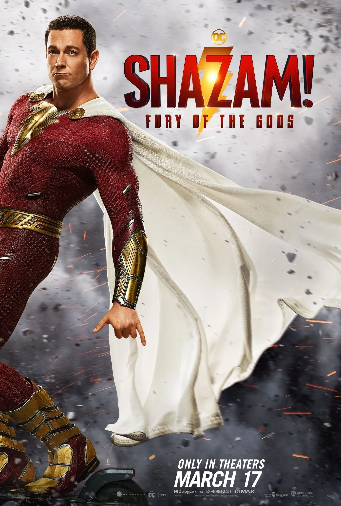

|
Después de un catastrófico choque en un planeta desconocido,
el piloto Mills (Adam Driver) rápidamente descubre que está en La Tierra…
hace 65 millones de años. Ahora, con una sola
oportunidad para su rescate, Mills junto a la única otra sobreviviente,
Koa (Ariana Greenblatt), deben cruzar un
terreno desconocido lleno de peligrosas criaturas prehistóricas en una épica
lucha para sobrevivir. |
 |
Los superhéroes Scott y Cassie Lang,
Hope van Dyne y sus padres, se encuentran accidentalmente atrapados en el reino cuántico y deben enfrentarse a un
nuevo enemigo, Kang el Conquistador |
 |
El Gato con Botas descubre que, debido a su pasión por la aventura,
ha gastado ya 8 de sus 9 vidas. Por tanto, emprende un peligroso viaje en busca del legendario Último Deseo para
solicitar que le restauren las vidas que ya perdió. |
 |
En las entrañas de la tierra, ¡existe una ciudad de momias! Por
mandato imperial, la Princesa Nefer debe casarse con Thut, un ex auriga de carros. Ninguno desea el matrimonio;
Nefer porque ansía la libertad, y Thut porque es alérgico al matrimonio. |
 |
Un asesino en serie, con máscara y disfraz negro, siembra el pánico
entre los adolescentes de un pueblo californiano. Paralelamente, la joven Sidney Prescott atraviesa un mal momento:
se cumple un año desde que murió su madre. |
|  |
Billy Batson y sus compañeros adoptados han recibido los poderes de
los dioses pero aún están aprendiendo a compaginar sus vidas de adolescentes con sus alter-egos superheróicos. Pero
cuando las Hijas de Atlas, un vengativo trío de antiguos dioses, llegan a la Tierra en busca de la magia que les
robaron hace mucho tiempo, Billy -alias Shazam- y su familia se ven envueltos en una batalla por sus superpoderes,
sus vidas y el destino de su mundo. |
 |
La célebre música Lydia Tár está a punto de grabar la sinfonía que
supondrá la cumbre de su carrera. Sin embargo, el destino parece estar en su contra y solo encuentra consuelo en
Petra, su hija adoptiva. |
 |
Un solitario profesor de inglés que tiene obesidad mórbida y vive
recluido intenta reconectar con su hija adolescente para tener una última oportunidad de redención. |
 |
Ahora asilvestrados y sedientos de sangre, Winnie the Pooh y
Piglet aterrorizan a Christopher Robin y a un grupo de jóvenes en una casa remota. |